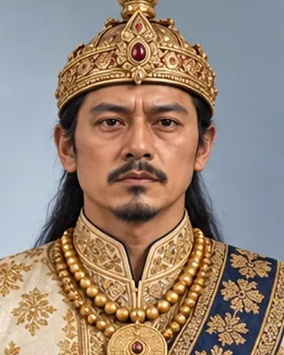
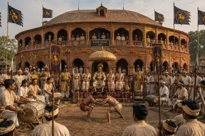
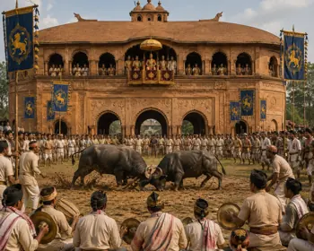
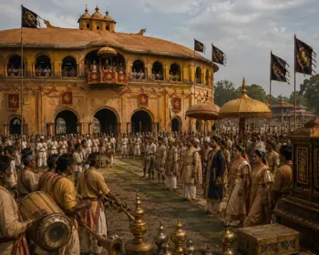
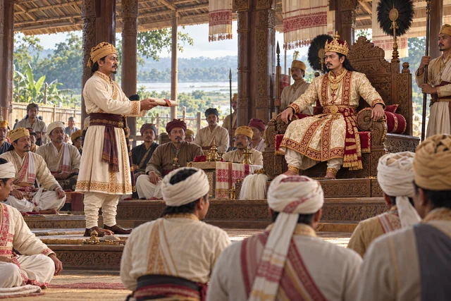

প্ৰমত্ত সিংহ
1744–1751 · Thirty-second Ahom king

Brother of Siva Singha; died naturally. Catalogued scenes show Rang Ghar games in his reign.
Record confidence: medium.
Open interactive profile

1744

c. 1746

c. 1748

1751